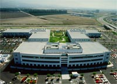

| The New AST AST Computer designs, manufactures, and markets desktop, server, and notebook computers for corporate customers around the world. The company also offers high-quality display monitors and an impressive array of programs and services aimed at helping customers obtain maximum value for their technology investment. Headquartered in Irvine, Calif., AST is a wholly owned subsidiary of Samsung Electronics Co., Ltd. As a member of the Samsung Group of companies, with a collective $93 billion in annual revenues during fiscal year 1996, AST has close ties to vast resources, including capital, engineering personnel, research and development and the availability of key components used in the manufacturing of personal computers. The company also has access to extensive patent portfolios, and the ability to influence the creation of new PC component technologies and better utilize of the benefits from numerous technical cooperation agreements that Samsung has forged with the some of the world’s leading technology companies, including Intel, Texas Instruments, Toshiba, Mitsubishi, Motorola, Siemens, SGS-Thompson and Qualcomm. Each of these particulars combine to provide AST customers with greater security and assurance that their PC needs will be met both now and in the future. AST prides itself on being one of the most responsive companies in the PC industry for meeting the needs of resellers and corporate buyers. By combining the latest technology with innovative service and support programs, AST Computer is distinguishing itself as one of the most value-added PC manufacturers for the global business community. The company offers a full-range of award-winning products, providing the corporate customer with the efficiency and convenience of a single-source PC solution. These products include Bravo desktops, Ascentia™ notebooks, AST Premium servers, and ASTVision monitors. Manufacturing facilities for AST’s systems are located close to customers in Europe, Asia, and the United States to ensure that rapidly fluctuating demands can by quickly accommodated. Backed by the immense resources and quality components of Samsung, AST is better suited than ever before to quickly adapt to the ever-changing market while maintaining low cost and high quality products. |